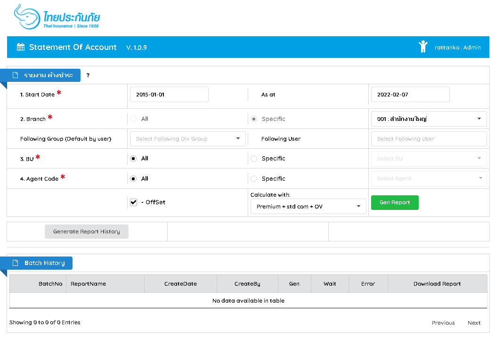
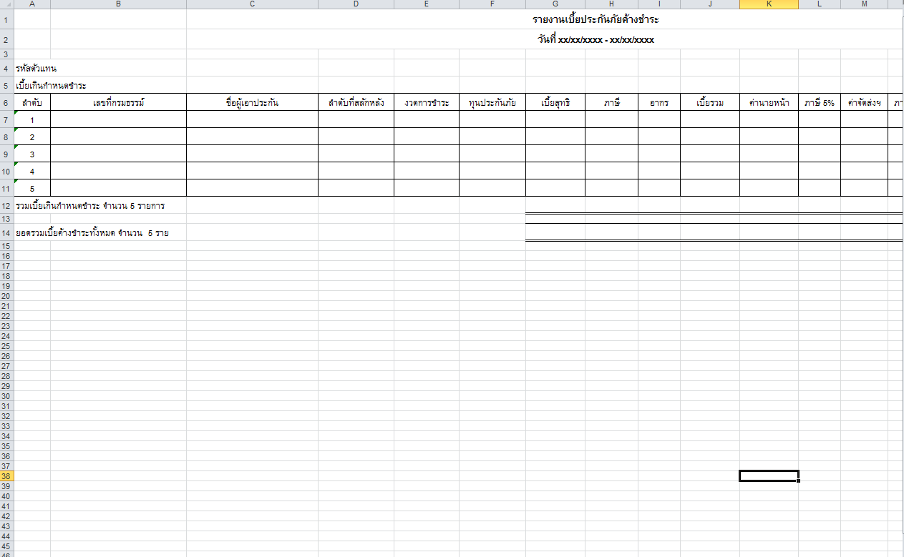

Job Position : Information technology (Full-Stack Java Programmer)
Detail : Designing and creating software programs, integrating systems and software, training end-users, analyzing algorithms, modifying source-code, writing system instructions, debugging, and maintaining operating systems.
| Overview | |
|---|---|
| Programming language: | Java, JSP, Javascript, CSS, JSON, XML ... |
| Library/Framework: | Jquery, Ajax,Bootstrap, Semantic-UI, Spring, Servlet, Stored Procedure, DBFunctions ... |
| Server: | WebSphere, LDAP Server... |
| Database Environment: | DB2, SQL Server, Informix... |
| Development Tools: | Eclipse, Toad for DB2, Toad for SQL Server, Jasper Report |
| Operating System: | Windows... |
| Work experiences | |
|---|---|
| System Name | Description |
| AdminWeb |
Position : Programmer Role : Developed functional specifications from requirements and test system . (ระบบหน้า Admin สำหรับ User ในบริษัท) Database : DB2, SQL Server, Informix... Tools : JSP, .js, Jquery, Semantic-UI, Eclipse,Java , Spring MVC, Toad, |
| Statement System for accounting department |
Position : Developer, Programmer Role : Developed System from user requirements and test system . (ระบบ Statement ให้กับแผนกบัญชีไว้สำหรับสร้าง Statement ตัดเบี้ยตามรหัสตัวแทน) Team : 1 persons Database : DB2, SQL Server Tools : JSP, .js, Jquery, Semantic-UI, Eclipse,Java , Spring MVC, Toad,POI,Excel ... |
|
  |
|
| DMSPilot System |
Position : Developer, Programmer Role : Developed System from user requirements and test system . (REST API Service สำหรับส่งข้อมูลกรมธรรม์ให้กับ คปภ.) Team : 1 persons Database : SQL Server Tools : Eclipse, Java, Spring MVC, Toad,Postman,SOAP UI, Stored Procedure |
| TMB Tablet (Web Application for TMB license) |
Position : Programmer Role : Developed functions from requirements and test system . (Web Application for TMB license agent to sale insurance (product PA and Home)) Team : 5 persons Database : SQL Server Tools : JSP, .js, Jquery, Semantic-UI, Eclipse,Java , Spring MVC, Toad for SQL, JWT... |
{kind=link}
{kind=link}